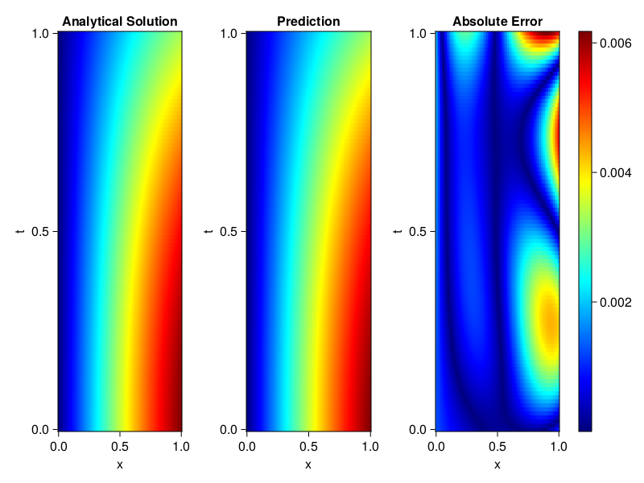
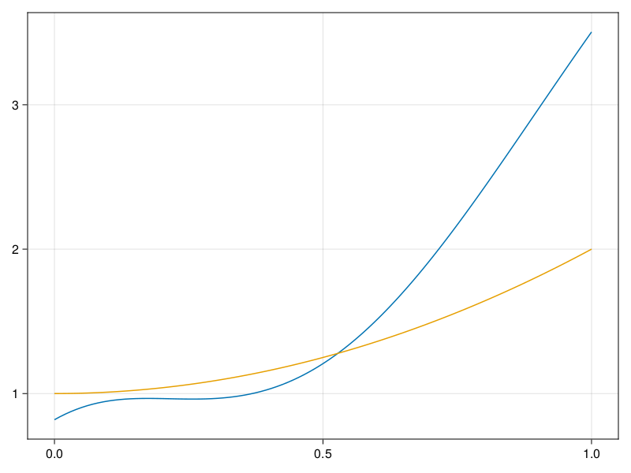

Inverse problem for the wave equation with unknown velocity field
We are going to sovle the wave equation.
using Sophon, ModelingToolkit, IntervalSets
using Optimization, OptimizationOptimJL
@parameters x, t
@variables u(..), c(..)
Dₜ = Differential(t)
Dₜ² = Differential(t)^2
Dₓ² = Differential(x)^2
s(x,t) = abs2(x) * sin(x) * cos(t)
eq = Dₜ²(u(x,t)) ~ c(x) * Dₓ²(u(x,t)) + s(x,t)
bcs = [u(x, 0) ~ sin(x),
Dₜ(u(x, 0)) ~ 0,
u(0, t) ~ 0,
u(1, t) ~ sin(1) * cos(t)]
domains = [t ∈ Interval(0.0, 1.0),
x ∈ Interval(0.0, 1.0)]
@named wave = PDESystem(eq, bcs, domains, [t,x], [u(x,t),c(x)])\[ \begin{align} \frac{\mathrm{d}}{\mathrm{d}t} \frac{\mathrm{d}}{\mathrm{d}t} u\left( x, t \right) =& c\left( x \right) \frac{\mathrm{d}}{\mathrm{d}x} \frac{\mathrm{d}}{\mathrm{d}x} u\left( x, t \right) + \cos\left( t \right) \left|x\right|^{2} \sin\left( x \right) \end{align} \]
Here the velocity field $c(x)$ is unknown, we will approximate it with a neural network.
pinn = PINN(u = FullyConnected((2,16,16,16,1), sin),
c = FullyConnected((1,16,16,1), tanh))
sampler = QuasiRandomSampler(500,100)
strategy = NonAdaptiveTraining(1, (10,10,1,1))NonAdaptiveTraining{Int64, NTuple{4, Int64}}(1, (10, 10, 1, 1))Next we generate some data of $u(x,t)$. Here we place two sensors at $x=0.1$ and $x=0.5$.
ū(x,t) = sin(x) * cos(t)
x_data = hcat(fill(0.1, 1, 50), fill(0.5, 1, 50))
t_data = repeat(range(0.0, 1.0, length = 50),2)'
input_data = [x_data; t_data]
u_data = ū.(x_data, t_data)1×100 Matrix{Float64}:
0.0998334 0.0998126 0.0997503 0.0996464 … 0.275281 0.267213 0.259035Finally we construct the inverse problem and solve it.
additional_loss(phi, θ) = sum(abs2, phi.u(input_data, θ.u) .- u_data)
prob = Sophon.discretize(wave, pinn, sampler, strategy; additional_loss=additional_loss)
@time res = Optimization.solve(prob, BFGS(), maxiters=1000)u: ComponentVector{Float64}(u = (layer_1 = (weight = [-0.6474644585044188 -0.6396938731023646; 0.37993010979680053 -0.5558001585364782; … ; -0.9180078383968336 0.40765469597512727; -1.1711724406359192 -1.0760895968543767], bias = [0.10983992676033437; -0.08034550973534613; … ; -0.18597681082977421; 0.02985935382295216;;]), layer_2 = (weight = [0.029665920373979165 -0.2287106626901186 … -0.5444127832021644 -0.17399297749110212; 0.6478769357067118 -0.29531088832426367 … -0.3029880872086768 -0.45982250202304886; … ; 0.25418757787126484 0.17682823472317233 … 0.2245276015467663 -0.6792137185453245; 0.5022036855478956 -0.18665144542852277 … 0.3465281200740953 0.4834927670949029], bias = [0.08029761025169062; 0.12067721776258984; … ; 0.04133265473004658; -0.17946145531728533;;]), layer_3 = (weight = [-0.14339161287987914 0.21790147550621228 … 0.5930636992937585 0.45209869985722695; -0.4204397773780932 0.33123996126279565 … -0.17915270627316554 0.20984207747159975; … ; -0.11932858770631029 -0.34744006302416586 … -0.49663565089009 -0.6069287526088346; -0.25245414965619395 0.1571577042111577 … -0.3457496532269862 -0.47015698697139724], bias = [0.06742204498599448; 0.013468362337120782; … ; 0.14648014527574194; 0.050683140959421044;;]), layer_4 = (weight = [0.4552605630584753 0.042039123471294994 … -0.014399969329127899 0.1518715436635797], bias = [-0.09544998985007278;;])), c = (layer_1 = (weight = [-2.048681047653025; -1.0987998801064682; … ; -2.565811690693785; 1.7751967016365588;;], bias = [0.32110366337395724; -0.04224582317174758; … ; 0.4322032646493497; 0.05625659594814919;;]), layer_2 = (weight = [-0.7451174408966736 -0.39365260128021984 … -0.6742779600825208 0.1670322780664164; 0.24038178884099443 -0.1091976594048112 … 0.8555227424773967 0.5077893581230251; … ; 0.6237495218205542 -0.27653065509641295 … 0.37684663929977646 0.3154154325422175; -0.5964570547494045 -0.3712708228723116 … 0.5536792475635667 -0.5310359625769798], bias = [0.021871142832116896; -0.022628164477140184; … ; 0.07370738938160244; -0.28863276364498597;;]), layer_3 = (weight = [0.2794390754797609 1.3411970108638902 … 0.01988174356911113 -0.7295230020700594], bias = [0.7655872945130148;;])))Let's visualize the predictted solution and inferred velocity
using CairoMakie
ts = range(0, 1; length=100)
xs = range(0, 1; length=100)
u_pred = [pinn.phi.u([x, t], res.u.u)[1] for x in xs, t in ts]
c_pred = [pinn.phi.c([x], res.u.c)[1] for x in xs]
u_true = [ū(x, t) for x in xs, t in ts]
c_true = 1 .+ abs2.(xs) |> vec
axis = (xlabel="x", ylabel="t", title="Analytical Solution")
fig, ax1, hm1 = heatmap(xs, ts, u_true, axis=axis; colormap=:jet)
ax2, hm2= heatmap(fig[1, end+1], xs, ts, u_pred, axis= merge(axis, (;title = "Prediction")); colormap=:jet)
ax3, hm3 = heatmap(fig[1, end+1], xs, ts, abs.(u_true .- u_pred), axis= merge(axis, (;title = "Absolute Error")); colormap=:jet)
Colorbar(fig[:, end+1], hm3)
fig
fig, ax = lines(xs, c_pred)
lines!(ax, xs, c_true)
fig